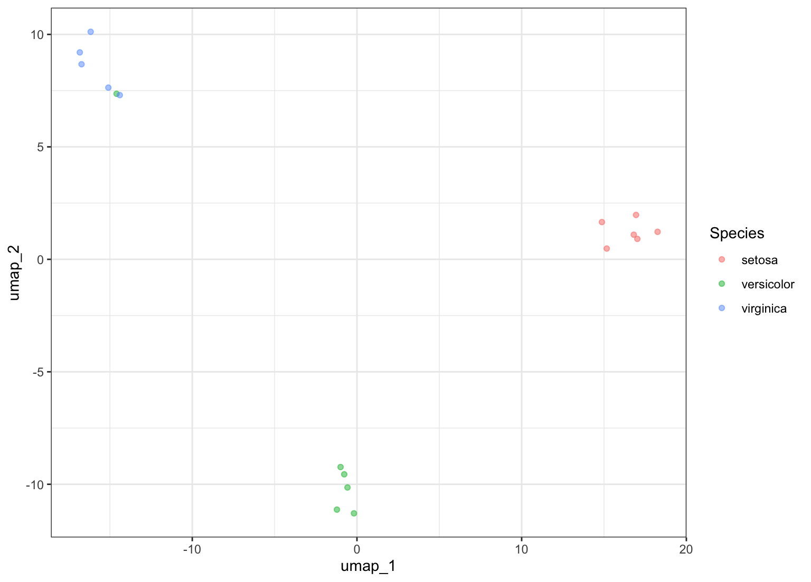

step_umap.Rdstep_umap creates a specification of a recipe step that
will project a set of features into a smaller space.
step_umap(recipe, ..., role = "predictor", trained = FALSE, outcome = NULL, neighbors = 15, num_comp = 2, min_dist = 0.01, learn_rate = 1, epochs = NULL, options = list(verbose = FALSE, n_threads = 1), seed = sample(10^5, 2), retain = FALSE, object = NULL, skip = FALSE, id = rand_id("umap")) # S3 method for step_umap tidy(x, ...)
| recipe | A recipe object. The step will be added to the sequence of operations for this recipe. |
|---|---|
| ... | One or more selector functions to choose variables. For
|
| role | For model terms created by this step, what analysis role should they be assigned?. By default, the function assumes that the new embedding columns created by the original variables will be used as predictors in a model. |
| trained | A logical to indicate if the quantities for preprocessing have been estimated. |
| outcome | A call to |
| neighbors | An integer for the number of nearest neighbors used to construct the target simplicial set. |
| num_comp | An integer for the number of UMAP components. |
| min_dist | The effective minimum distance between embedded points. |
| learn_rate | Positive number of the learning rate for the optimization process. |
| epochs | Number of iterations for the neighbor optimization. See
|
| options | A list of options to pass to |
| seed | Two integers to control the random numbers used by the
numerical methods. The default pulls from the main session's stream of
numbers and will give reproducible results if the seed is set prior to
calling |
| retain | A single logical for whether the original predictors should be kept (in addition to the new embedding variables). |
| object | An object that defines the encoding. This is
|
| skip | A logical. Should the step be skipped when the recipe is baked
by |
| id | A character string that is unique to this step to identify it. |
| x | A |
An updated version of recipe with the new step added to the
sequence of existing steps (if any). For the tidy method, a tibble with a
column called terms (the selectors or variables for embedding) is
returned.
UMAP, short for Uniform Manifold Approximation and Projection, is a nonlinear dimension reduction technique that finds local, low-dimensional representations of the data. It can be run unsupervised or supervised with different types of outcome data (e.g. numeric, factor, etc).
McInnes, L., & Healy, J. (2018). UMAP: Uniform Manifold Approximation and Projection for Dimension Reduction. https://arxiv.org/abs/1802.03426.
"How UMAP Works" https://umap-learn.readthedocs.io/en/latest/how_umap_works.html
library(recipes) library(dplyr) library(ggplot2) split <- seq.int(1, 150, by = 9) tr <- iris[-split, ] te <- iris[ split, ] set.seed(11) supervised <- recipe(Species ~ ., data = tr) %>% step_center(all_predictors()) %>% step_scale(all_predictors()) %>% step_umap(all_predictors(), outcome = vars(Species), num_comp = 2) %>% prep(training = tr) theme_set(theme_bw()) bake(supervised, new_data = te, Species, starts_with("umap")) %>% ggplot(aes(x = umap_1, y = umap_2, col = Species)) + geom_point(alpha = .5)